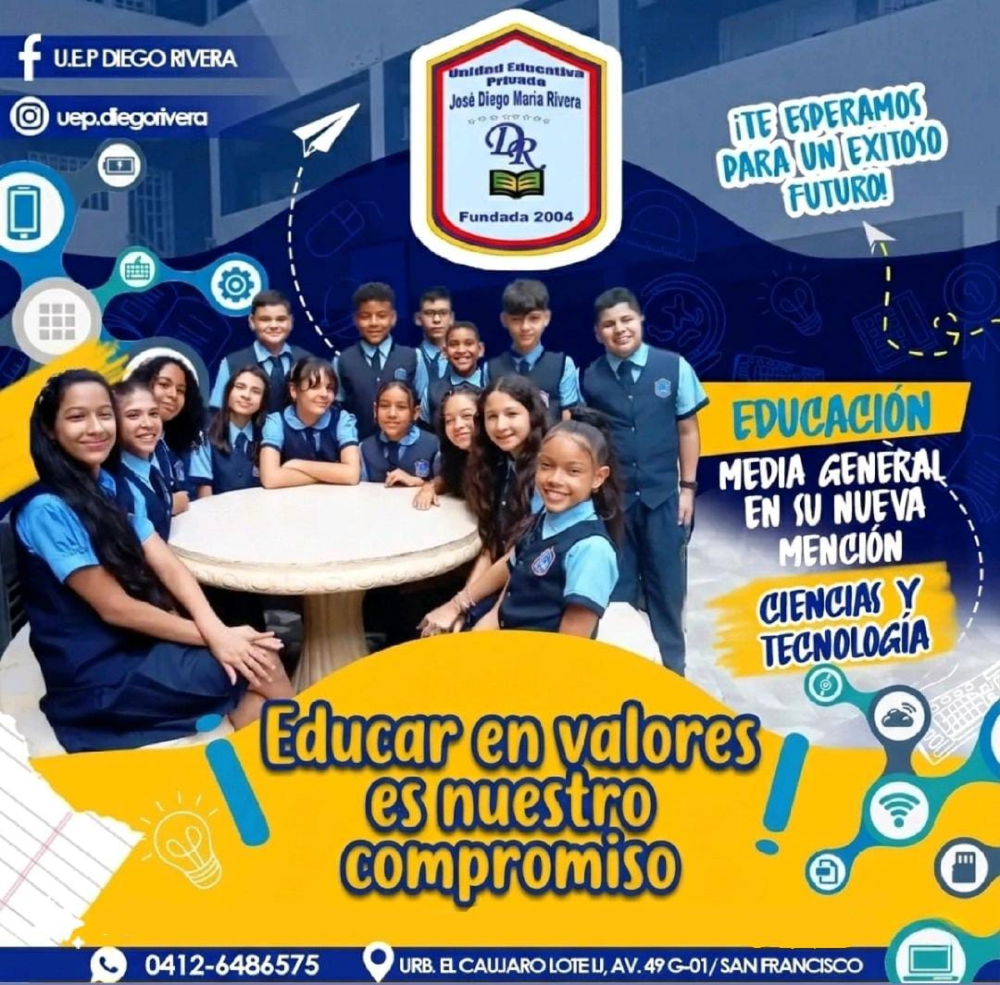

La Unidad Educativa Privada (U.E.P.) José Diego María Rivera, ubicada en (Insertar ubicación) es una institución educativa de carácter privado que se ha consolidado como un referente en el ámbito educativo local. Con una trayectoria de al menos 19 años de servicio ininterrumpido, el "Rivera" ha dejado una huella imborrable en generaciones de estudiantes, caracterizándose por brindar espacios formativos que trascienden la mera transmisión de conocimientos. Su enfoque se centra en la felicidad y el desarrollo integral de sus niños, niñas y adolescentes, posicionándose como una casa de estudios reconocida por su compromiso con la excelencia académica y la formación en valores.
La Gran Familia Dieguista: Una Identidad Única. Más que un colegio, la U.E.P. José Diego María Rivera es una verdadera comunidad. Se le conoce comúnmente como "La Gran Familia Dieguista", un apelativo que refleja el profundo sentido de pertenencia, compañerismo y apoyo mutuo que se respira en sus aulas y pasillos. Este espíritu familiar no solo une a los estudiantes, sino que también involucra activamente a docentes, personal administrativo, obrero y, fundamentalmente, a los padres y representantes, quienes son pilares fundamentales en el proceso educativo.
La misión principal de nuestra institución es clara y ambiciosa: crear un entorno donde los estudiantes sean genuinamente felices. Se parte de la premisa de que un niño feliz es un niño más receptivo al aprendizaje, más creativo y más propenso a desarrollar todas sus potencialidades. Para lograrlo, la U.E.P. José Diego María Rivera combina la enseñanza académica de alto nivel con un enfoque pedagógico que prioriza el bienestar emocional. Se fomenta la inteligencia emocional, la empatía, la resiliencia y la autoestima, brindando a los estudiantes las herramientas necesarias para enfrentar los desafíos de la vida con confianza y optimismo.
En la mención de Ciencias y Tecnología, impulsamos el espíritu investigador y la curiosidad intelectual. Nuestros laboratorios y aulas son espacios de innovación donde el error se ve como una oportunidad de aprendizaje y el éxito como el resultado de la constancia. Al egresar, nuestros bachilleres no solo llevan consigo un certificado de alta competitividad, sino también la brújula moral necesaria para navegar con éxito en un mundo en constante cambio. En la U.E.P. José Diego María Rivera, no solo preparamos para la universidad; preparamos para la vida, cultivando mentes brillantes y corazones nobles que sean orgullo de sus familias y de nuestra nación.

El Colegio José Diego María Rivera se fundamenta en una filosofía de formación integral donde la excelencia académica converge con la sensibilidad social y el pensamiento creativo. Nuestra institución entiende que educar es un acto de transformación constante, por lo que priorizamos el desarrollo de ciudadanos íntegros que actúen bajo principios de honestidad, respeto mutuo y solidaridad comunitaria.
Fomentamos un entorno de aprendizaje dinámico donde la curiosidad intelectual se equilibra con la responsabilidad ética, impulsando a cada estudiante a descubrir su potencial único para convertirse en un líder consciente y comprometido con el bienestar de su entorno. Creemos firmemente que la disciplina y el esfuerzo son los pilares que permiten convertir el talento en una herramienta de servicio, logrando así que nuestros egresados no solo dominen el conocimiento técnico, sino que también posean la calidad humana necesaria para construir una sociedad más justa, innovadora y profundamente humana.
La institución cuenta con instalaciones modernas y adecuadas para el desarrollo de las actividades académicas, deportivas, artísticas y culturales. Aulas amplias y ventiladas, laboratorios de ciencias y computación, biblioteca, espacios recreativos y áreas deportivas están a disposición de los estudiantes para potenciar su aprendizaje y recreación.